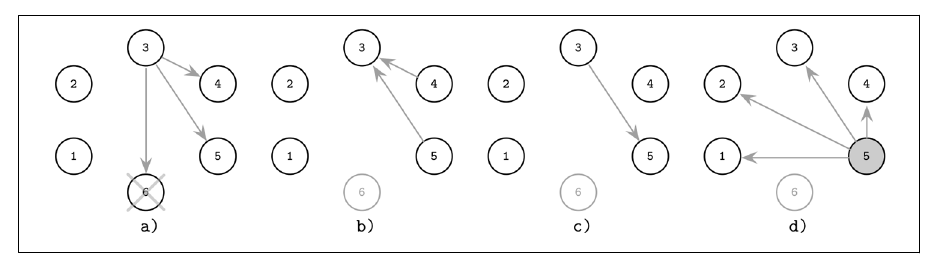
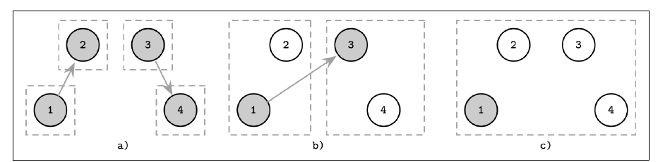
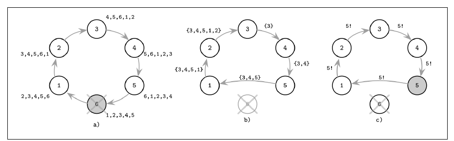

فصل ۱۰ · صص. ۲۰۵–۲۱۳
انتخاب leader
Leader Election
Database Internals, 1st Edition
تماس گرفتن با هر شرکتکنندهای در هر قدمی گران است، بهویژه در شبکههای بزرگ یا جغرافیاییتوزیعشده. پس خیلی از الگوریتمها به یک leader، که coordinator است، تکیه میکنند تا اجرا را براند یا همآهنگ کند (ص. ۲۰۵). هر processی میتواند leader شود. معمولاً تا از کار افتادنش leader میماند، و بعد انتخابی تازه جانشینی برمیدارد (ص. ۲۰۵).
- مفهوم liveness: بیشتر وقتها leaderی هست، و انتخابها در غایت تمام میشوند.
- ایمنی: در هر زمانی حداکثر یک leader، بی split brain. خیلی از الگوریتمهای انتخاب در عمل این را نقض میکنند (ص. ۲۰۵).
فصل چند الگوریتم را میپوشاند:
- الگوریتم Bully که انتخابی پادشاهی است: بالاترین رتبه میبرد.
- دو بهینهسازی Bully: فهرستهای failover نفر بعدی و جدایی نامزد و عادی با تساویشکن δ.
- الگوریتم دعوت، که بهجای رتبه زدن گروهها را merge میکند.
- الگوریتم حلقه، که مجموعهی زندهها را گرد حلقه جمع میکند.
نتیجهگیریاش: هر یک از آنها بی اکثریت clusterسراسری به split brain گرایش دارد، و انتخاب leader خودش مسئلهای از جنس consensus است. الگوریتمهای Multi-Paxos و Raft میگذارند leaderها کوتاهمدت تعارض کنند و تعارضها را ایمن حل (صص. ۲۰۷–۲۱۳).
فهرست خود فصل (از فهرست مطالب کتاب)
- الگوریتم Bully — ص. ۲۰۷
- بخش failover نفر بعدی — ص. ۲۰۸
- بهینهسازی نامزد و عادی — ص. ۲۰۹
- الگوریتم دعوت — ص. ۲۱۰
- الگوریتم حلقه — ص. ۲۱۱
- خلاصه — ص. ۲۱۲
از کتاب
مقدمه
همهی leaderها مثلاً برای برپا کردن ترتیب کلی پیامها در پخشی به کار میروند: leader حالت جهانی را دارد، پیامها را میگیرد و پخششان میکند. همچنین سازمان دوباره را پس از شکست و سر راهاندازی و سر تغییرهای مهم حالت همآهنگ میکنند (ص. ۲۰۵). انتخابها سر راهاندازی و وقتی leader از کار بیفتد یا حرف زدن را بس کند برانگیخته میشوند (ص. ۲۰۶). leaderی پایدار از synchronization حالت میان همتاها میپرهیزد، پیام را میبرد، و اجرا را از یک جا میراند (ص. ۲۰۶). الگوریتمهای ZAB و Multi-Paxos و Raft leaderهای موقت با انتخاب و تشخیص شکست و حل تعارض الگوریتمویژهی خودشان به کار میبرند (ص. ۲۰۶).
| انتخاب leader | قفل توزیعشده | |
|---|---|---|
| بقیه باید دارنده را بدانند؟ | بله؛ leader تازه خودش را اعلام میکند | نه |
| ترجیح برخی processها | اشکالی ندارد؛ leaderهای دیرزیست ترجیح داده میشوند | بقیه را گرسنه میگذارد، که liveness را نقض میکند |
| دارنده نقش را نگه میدارد | تا بس کند یا از کار بیفتد | باید در غایت رهایش کند |
از ص. ۲۰۶.
از کتاب
الگوریتم Bully
هر processی رتبهای یکتا دارد، و بالاترینرتبهی زنده leader میشود، از گارسیا-مولینا. نام از این میآید که نود سر بقیه را «زورگویانه» وا میدارد قبولش کنند؛ انتخاب پادشاهی هم نامیده میشود (ص. ۲۰۷). کتاب گونهی تغییریافتهی جمعوجور را وصف میکند، از کردافشاری و همکاران، یادداشت ۱ (ص. ۲۰۷):
- پیامهای Election را به هر processی با ID بالاتر بفرست.
- منتظر پاسخ بمان. اگر هیچ process رتبهبالاتری پاسخ ندهد، به قدم ۳ برو. وگرنه به بالاترینرتبهای که پاسخ داده خبر بده و بگذار او قدم ۳ را بکند.
- فرض بگیر هیچ process رتبهبالاتری زنده نیست و خودت را به همهی processهای رتبهپایینتر اعلام کن.
شکل ۱۰-۱ (صص. ۲۰۷–۲۰۸):


| مسئله | علت و درمان (ص. ۲۰۸) |
|---|---|
| split brain | پارتیشنی نودها را به گروه میشکند، و هر گروهی leaderی انتخاب میکند |
| انتخاب دوبارهی بیپایان | نودی ناپایدار و رتبهبالا میبرد، میشکند، بازهم میبرد… درمان: سنجههای کیفیت میزبان را پخش کنید و در انتخاب در نظر بگیرید |
در stack ما چند جزء برای «فقط یک نمونه کار کند» به هماهنگی نیاز دارند: scheduler در Airflow، controllerهای Kubernetes، Argo CD.
?نوبت شما · دو scheduler در Airflow اجرا میکنید. چه چیزی نمیگذارد یک task دو بار برنامهریزی شود؟دیدن پاسخ
Airflow leader انتخاب نمیکند؛ هر scheduler با SELECT … FOR UPDATE SKIP LOCKED ردیفها را در دیتابیس metadata قفل میکند و دیتابیس نقش coordinator را دارد. انتخاب leader راه دیگری است که هماهنگی هر عمل را به یک بار انتخاب تبدیل میکند، به بهای خطر split brain (ص. ۲۰۷).
امتحان کنید
انتخاب Bully
باز کردن در صفحهی کامل ↗ · این شبیهسازی مدل خود vault از سازوکاری است که کتاب شرح میدهد.
از کتاب
عمل failover نفر بعدی
هر leaderی فهرستی از نودهای failover منتشر میکند، از غلیپور و همکاران (ص. ۲۰۸). processی که شکست leader را تشخیص بدهد با بالاترینرتبهی جانشین در آن فهرست تماس میگیرد. اگر زنده باشد، بی دور انتخاب کامل leader میشود. اگر خود process detector سرجانشین باشد، فوری خودش را اعلام میکند (ص. ۲۰۸). در شکل ۱۰-۲، leader یعنی ۶ با جانشینهای {5, 4} از کار میافتد؛ process ۳ با ۵ تماس میگیرد؛ process ۵ پاسخ میدهد که زنده است، که جلو تماس گرفتن ۳ با بقیه را میگیرد؛ و ۵ leadershipاش را اعلام میکند (صص. ۲۰۸–۲۰۹).
controllerهای Kubernetes leader را با یک Lease انتخاب میکنند که مدت دارد و باید مدام تمدید شود.
?نوبت شما · چرا lease مدتدار است، و چه خطری باز هم میماند؟دیدن پاسخ
اگر leader بمیرد و lease را رها نکند، lease منقضی میشود و نمونهی دیگری جایش را میگیرد. ولی leader قدیمی که فقط کند شده ممکن است هنوز خودش را leader بداند؛ پس هر نوشتن باید با fencing یا بررسی lease همراه باشد (صص. ۲۰۸–۲۱۲).
از کتاب
بهینهسازی نامزد و عادی
نودها به نامزد، که میتوانند leadership کنند، و نودهای عادی جدا میشوند، از مرشد و آلن (ص. ۲۰۹). processی عادی انتخاب را با تماس گرفتن با نامزدها شروع میکند، بالاترینرتبهی زنده را برمیدارد و نتیجه را اعلام. انتخابهای همهنگام با تساویشکن δ پرهیز میشوند: latencyی processویژه، که معمولاً از یک رفتوبرگشت پیام بلندتر است، و برای نودهای اولویتبالاتر کمتر، تا یک نود اول شروع کند (ص. ۲۰۹). در شکل ۱۰-۳، process عادی ۴ میبیند که ۶ شکسته، با نامزدها تماس میگیرد، و leader یعنی ۲ را اعلام میکند (صص. ۲۰۹–۲۱۰).
از کتاب
الگوریتم دعوت
همهی processها بهجای رتبه زدن بقیه را به پیوستن به گروهشان دعوت میکنند. چند leader بنا به طرح وجود دارند، یکی برای هر گروهی (ص. ۲۱۰).
- هر processی بهشکل leader گروهی یکنفره شروع میکند.
- یک leader همتاهای بیرون گروهش را دعوت میکند. اگر آن همتا هم leader باشد، آن دو گروه merge میشوند. وگرنه همتا با ID مربوط به leaderش پاسخ میدهد، تا آن دو leader بتوانند یکراست merge کنند (ص. ۲۱۰).
- مهم نیست کدام leader آخر سر مسئول میشود. برداشتن leader گروه بزرگتر پیام را کمینه میکند، چون تنها به گروه کوچکتر لازم است گفته شود (ص. ۲۱۱).
در شکل ۱۰-۴، process ۱ به ۲ دعوت میدهد و ۳ به ۴؛ بعد ۱ با ۳ تماس میگیرد، و به ۴ از leader تازه گفته میشود؛ leader گروه mergeشده ۱ است (ص. ۲۱۰). گروهها بی شروع کردن انتخابهای تازه از صفر merge میشوند (ص. ۲۱۱).


از کتاب
الگوریتم حلقه
نودها حلقهای میسازند و پیشینها و پسینهایشان را میشناسند، از چنگ و رابرتس (ص. ۲۱۱).
- نودی که شکست را تشخیص بدهد پیامی انتخاب به پسینش میفرستد، و از نودهای دستنیافتنی میپرد تا یکی پاسخ بدهد.
- هر نودی پیش از دادن پیام به بعدی خودش را به مجموعهی زنده میافزاید، شبیه آن detector بی timeout که به مسیرش میچسباند (ص. ۲۱۱).
- وقتی پیام به آغازگر برگردد، بالاترینرتبهی مجموعهی زنده leader میشود، و سفری دوم گرد حلقه اعلامش میکند (ص. ۲۱۱).
در شکل ۱۰-۵، process ۶ شکسته و ۳ پیمایش را شروع میکند. process ۵ نمیتواند به ۶ برسد، پس به ۱ میپرد. چون ۵ بالاترین رتبه را دارد، ۳ دور دومی میفرستد و اعلامش میکند (صص. ۲۱۱–۲۱۲). گونهای فضاصرفهجو تنها بیشینهی جاری از ID را حمل میکند، که کار میکند چون max commutative است (ص. ۲۱۲). حلقهای که به بخشها بشکند میتواند برای هر بخشی leaderی انتخاب کند، پس اینجا هم تضمین ایمنیای نیست (ص. ۲۱۲).


از کتاب
خلاصه
یک leader برگزیده سرریز همآهنگی را کم میکند. انتخابها گراناند ولی کمیاب، و leader برای هر پارتیشنی، یا leaderهای مختلف برای کنشهای مختلف، از گلوگاه میپرهیزند (ص. ۲۱۲). هر الگوریتمی در این فصل به split brain گرایش دارد؛ و پرهیز از آن اکثریت رأی clusterسراسری لازم دارد (ص. ۲۱۲).
آیا انتخاب leader همان consensus است؟ توافق روی هویت leaderی خودش consensus است، و با آن میشد روی هر چیزی توافق کرد، از ابراهام و مالکی (صص. ۲۱۲–۲۱۳). leader میتواند بی آنکه processی ببیند عوض شود، پس انتخاب باید با تشخیص شکست ترکیب شود. مثلاً الگوریتم انتخاب leader پایدار دورهایی با leader پایدار یکتا و timeout به کار میبرد، تا leaderی تا زنده و دستیافتنی است نقشش را نگه دارد (ص. ۲۱۳).
| الگوریتم | leaderهای متعارض چطور حل میشوند (ص. ۲۱۳) |
|---|---|
| Multi-Paxos | از دو proposer متعارض تنها یکی میتواند پیش برود؛ quorumی دوم جلو پذیرفته شدن هر دو مقدار را میگیرد |
| Raft | leaderی که بفهمد termش کهنه است به term تازهتر پایین میآید |
نقش leader liveness را تأمین میکند. موقت وا دادن ایمنی با مجاز کردن چند leader بهینهسازی کارایی است، چون ایمنی با تشخیص و حل تعارض بازگردانده میشود. فصل ۱۴ موضوع را ادامه میدهد (ص. ۲۱۳).
مرور
بدهبستانها در یک نگاه
| الگوریتم | پیام | چه کسی را برمیدارد | ضعف |
|---|---|---|---|
| Bully | در بدترین حالت تا مرتبهی O(n²) | بالاترین رتبهی زنده | split brain؛ انتخاب دوبارهی نودهای سر ناپایدار |
| failover نفر بعدی | کم، اگر جانشین زنده باشد | جانشینی که leader تعیین کرده | فهرست کهنه اگر جانشینها مرده باشند |
| نامزد و عادی | تنها با نامزدها تماس گرفته میشود | بالاترین نامزد زنده | δ تنظیمشده لازم دارد |
| دعوت | پیامهای merge | leader گروهی mergeشده | چند leader بنا به طرح |
| حلقه | ۲ پیمایش، هر یک از مرتبهی O(n) | بالاترین در مجموعهی زنده | حلقهی پارتیشنشده چندتا انتخاب میکند |
مرور
نکتههای کلیدی
- انتخاب باید قطعی باشد: دقیقاً یک leader بیرون میآید، و هر شرکتکنندهای میفهمد چه کسی (ص. ۲۰۶).
- انتخاب leader قفل توزیعشده نیست. لازم نیست دارندههای قفل معلوم باشند، و قفلی که برخی processها را ترجیح بدهد بقیه را گرسنه میگذارد. leader باید معلوم باشد، و leaderهای دیرزیست ترجیح داده میشوند (ص. ۲۰۶).
- نقش leader میتواند گلوگاه شود. داده را پارتیشن کنید و به هر مجموعهی replicaیی leader خودش را بدهید، چنانکه Spanner میکند (ص. ۲۰۶).
- الگوریتم Bully زیر پارتیشن split brain میسازد و میتواند نودی ناپایدار و رتبهبالا را باربهبار دوباره انتخاب کند. برای پرهیز، سنجههای کیفیت میزبان را پخش کنید (ص. ۲۰۸).
- فهرستهای failover و مجموعههای نامزد پیام را میبرند؛ و latency δ برای هر نودی تساوی میان انتخابهای همهنگام را میشکند (صص. ۲۰۸–۲۰۹).
- الگوریتم حلقه میتواند تنها بیشینهی جاری را حمل کند، چون max commutative است (ص. ۲۱۲).
- مجاز کردن چند leader بهطور موقت بهینهسازی کارایی است. ایمنی از تشخیص و حل تعارض میآید، با quorumهای Paxos یا termهای Raft (ص. ۲۱۳).
تمرین
خودتان را بسنجید
پرسشها و پاسخها مال vault است و از روی یادداشتهای بالا نوشته شده؛ پاسخها به صفحههای کتاب ارجاع میدهند.
۱چرا leader باید خودش را اعلام کند در حالی که دارندهی قفلی لازم ندارد؟دیدن پاسخ
leader وظیفههای ویژه دارد و باید برای همهی شرکتکنندهها معلوم باشد. برای قفل، تنها مهم است که در غایت رها شود (ص. ۲۰۶).
۲در الگوریتم Bully تغییریافته، process ۳ پیام Election را به ۴ و ۵ و ۶ میفرستد؛ processهای ۴ و ۵ پاسخ Alive میدهند. بعد چه میشود؟دیدن پاسخ
process ۳ به ۵ خبر میدهد، که بالاترینرتبهای است که پاسخ داده، و ۵ پیام Elected را به processهای رتبهپایینتر پخش میکند (صص. ۲۰۷–۲۰۸).
۴روش failover نفر بعدی انتخابی را چطور کوتاه میکند؟دیدن پاسخ
آن leader شکسته فهرستی از جانشینها منتشر کرده بود. process detector با بالاترینرتبه تماس میگیرد، که اگر زنده باشد بی دور انتخاب کامل تحویل میگیرد (ص. ۲۰۸).
۵مقدار δ در الگوریتم نامزد و عادی چیست؟دیدن پاسخ
latencyی تساویشکن و processویژه، که معمولاً از یک رفتوبرگشت بلندتر است و برای نودهای اولویتبالاتر کمتر، تا یک نود انتخابش را پیش از بقیه شروع کند (ص. ۲۰۹).
۶چرا الگوریتم حلقه میتواند بهجای مجموعهی زنده تنها یک ID را حمل کند؟دیدن پاسخ
تنها بیشینه را لازم دارد، و max commutative است، پس هر نودی میتواند مقایسه کند و ID بزرگتر را بدهد (ص. ۲۱۲).
۷الگوریتم Raft وجود دو leader را چطور حل میکند؟دیدن پاسخ
leaderی که بفهمد termش کهنه است میفهمد leaderی تازهتر هست و به term تازهتر بهروز میشود (ص. ۲۱۳).
مکمل
فراتر از کتاب
مکمل vault، نه از متن کتاب.
- شمار پیام الگوریتم Bully. اگر پایینترینرتبه از n process انتخاب را شروع کند، هر processی میتواند دور خودش را شروع کند، که در بدترین حالت پیام از مرتبهی O(n²) میدهد. اگر دومینبالاترین ببیند، تنها O(n) میبرد. آن widget پیام هر صحنهای را میشمارد.
- پروتکل lease و توکن حصار. در عمل، split brain با دادن lease*ی زمانکراندار به leader و مُهر زدن نوشتنهایش با *توکن حصار یکنواافزایشی، یعنی یک دوره یا term، مهار میشود، تا ذخیرهسازی نوشتنهای leader برکنارشده را رد کند. termهای Raft و دورههای zxid در ZooKeeper همین نقش را بازی میکنند. فصل ۹ کتاب DDIA را هم ببینید.
قدمهای بعدی
ادامه بدهید
پیوندها
- فصلهای مرتبط: فصل ۹: تشخیص شکست که آن چیزی را دارد که انتخابی را برمیانگیزد، فصل ۱۴: consensus که انتخابهای Multi-Paxos و Raft و ZAB را دارد، و فصل ۱۳: تراکنش توزیعشده که leader برای هر پارتیشنی در Spanner را دارد.